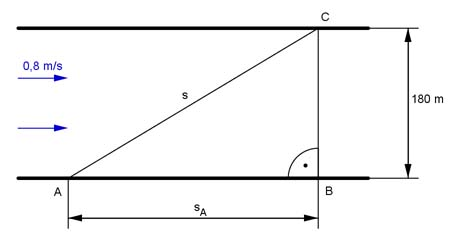

Pythagoras Aufgabe 80 Ein Fluss ist 180 m breit und hat eine Strömungsgeschwindigkeit vF = 0,8 m/s. Um ihn zu überqueren braucht ein Schwimmer 5 Minuten. a) Um wie viel m wird der Schwimmer dabei seitlich abgetrieben? b) Wie viel m hat der Schwimmer bei der Überquerung zurückgelegt?  a) sA = vF * t t = 5 min = 5 * 60 s = 300 s s = 0,8 m/s * 300 s = 240 m b) Satz von Pythagoras im Dreieck ABC: s² = BC² + sA² s² = 180² m² + 240² m² = 90 000 m² |√ s = 300 m